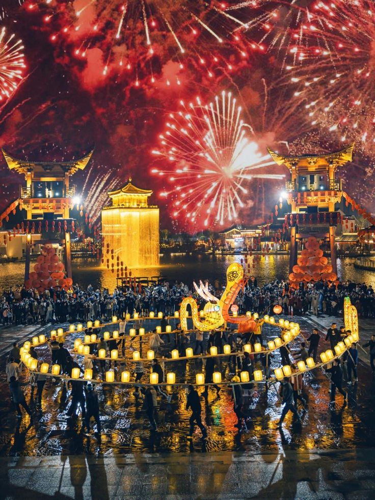

Choose a path to dive into the world of traditions and cultures
Explore Culture
History of Diwali
Diwali, also known as Deepavali, is rooted in the triumph of light over darkness and good over evil. Regional variations include Lord Rama's return to Ayodhya in northern India, Lord Krishna's victory over Narakasura in southern India, and the worship of Goddess Lakshmi in western India for prosperity. The lighting of diyas symbolizes guiding the way home and celebrating inner light. Jains celebrate Mahavira's liberation, and Sikhs observe Guru Hargobind's release.
Event Date
Diwali follows the Hindu lunisolar calendar, occurring between late October and early November. In 2024, the main day is Thursday, October 31st (Amavasya Tithi of Kartik month).
Venue / Location
Celebrated across India and by the Indian diaspora worldwide. Traditionally, in homes, temples, and community centers.
How to Celebrate
Clean your home: To welcome Goddess Lakshmi.
Decorate with lights: Diyas, candles, and decorative lights.
Create Rangoli: Patterns at entrances made of colored powders or flowers.
Wear new clothes: Dress in traditional attire.
Share sweets and gifts: Ladoos, jalebi, and other traditional sweets.
Perform Lakshmi Puja: Offer prayers for prosperity and good fortune.
Light fireworks: Celebrate responsibly.
Family & Community: Gather, share stories, and enjoy festivities.
Traditions by Region
Northern India: Lord Rama's return to Ayodhya.
Southern India: Krishna defeating Narakasura.
Western India: Worship of Goddess Lakshmi for wealth.
History of Holi
Holi's history is rooted in two Hindu mythological stories: the victory of good over evil through the tale of Prahlad and Holika, commemorated by Holika Dahan (bonfires), and the playful divine love between Lord Krishna and Radha. It also marks the arrival of spring, the end of winter, and harvest time, blending spiritual, historical, and cultural traditions.
The Legend of Prahlad and Holika
The Story: Demon king Hiranyakashipu demanded worship, but his son Prahlad stayed devoted to Lord Vishnu. Hiranyakashipu’s sister Holika, immune to fire, tried to kill Prahlad.
The Outcome: Holika was consumed by flames, while Prahlad survived by divine intervention.
Holika Dahan: The bonfire ritual the night before Holi, symbolizing victory of good over evil.
The Legend of Radha and Krishna
The Story: Krishna playfully colored Radha's face, inspiring the tradition of throwing colors.
The Celebration: Symbolizes love, joy, and playful mischief.
Symbolism & Seasonal Significance
Victory of Good over Evil: Celebrates virtue and faith triumphing over malevolence.
Arrival of Spring: Marks the end of winter and nature’s renewal.
Harvest and Renewal: A time for fresh beginnings and bountiful harvest.
Event Date
Holi is celebrated on the full moon day (Purnima) of Phalguna. In 2025, Holi falls on Friday, March 14. The celebration starts a day before with Holika Dahan, also called Chhoti Holi.
How to Celebrate
Before the Main Day (Holika Dahan)
Bonfire Ceremony: Light a bonfire to represent Holika.
Prayers and Songs: Gather with family and friends for rituals and songs celebrating good over evil.
On the Day of Holi (Rangwali Holi)
Play with Colors: Use powdered colors (gulal) and colored water on each other.
Water Play: Water guns or balloons filled with colors.
Wear White: Dress in old white clothes to make the colors pop.
Music and Dance: Enjoy traditional Holi songs and dance.
Festive Treats: Eat gujiya, malpua, and drink thandai.
Community & Visiting: Visit friends and family, exchange sweets, and participate in gatherings.
History of Chinese New Year
Chinese New Year's history dates back thousands of years to the Shang Dynasty (14th century BCE) and is rooted in agricultural practices and the ancient Chinese lunar calendar. Legend says a beast called Nian was scared by loud noises and the color red, leading to traditions like firecrackers and red decorations still used today. Key practices like cleaning homes, large family dinners, and paying respects to ancestors also developed over centuries, with the Han dynasty (202 BC – 220 AD) first recording new year celebrations.
Ancient Origins
Agriculture: The holiday likely began as a way for ancient agricultural societies to celebrate the end of the harvest and ask for a prosperous year.
Lunar Calendar: Its timing is based on the ancient Chinese lunar calendar, causing the date on the Gregorian calendar to vary annually.
Legend of Nian: A monster called Nian would attack villagers at the beginning of each year. Villagers discovered it feared loud noises, bright lights, and the color red, inspiring firecrackers, fireworks, and red clothing/decorations.
Development of Traditions
Early Practices: As early as the Shang Dynasty, people gave gifts to gods and family members during winter. Han dynasty records describe ancestor worship and New Year visits.
The 15-day festival begins with the new moon between January 21 and February 20 and ends with the full moon.
Family and Home Traditions
Family Reunion Dinner: Families gather to eat symbolic dishes like dumplings, fish, and sticky rice balls.
Thorough Cleaning: Homes are cleaned before the New Year to sweep away bad luck, symbolizing a fresh start.
Red Decorations: Lanterns, paper cuttings, and couplets are used to bring good fortune and ward off evil spirits.
Red Envelopes: Elders give children “lucky money” in red envelopes, and cultural performances like lion dances are common.
History of Cherry Blossom Festival (Hanami) - Japan
The tradition of cherry blossom viewing, or Hanami, dates back to the Nara Period (710-794) with plum blossoms, shifting to cherry blossoms in the Heian Period (794-1185). Emperor Saga hosted the first recorded cherry blossom viewing in 812. Over time, it became a nationwide cultural phenomenon, symbolizing the ephemeral nature of life (mono no aware).
Origins and Early Periods
Nara Period: Began with enjoyment of plum blossoms (ume).
Heian Period: Emperor Saga's first cherry blossom viewing party in 812.
Symbolism: Cherry blossoms symbolize the fleeting beauty of life, reflecting impermanence.
Edo Period: Wider Appeal
Tokugawa Shogunate: Shogun Tokugawa Yoshimune planted thousands of cherry trees, expanding public access.
Public Access: Hanami became a communal activity rather than an elite pastime.
Modern Transformation
Communal Culture: People gather for parties and picnics under cherry trees.
Popular Varieties: Introduction of Somei-yoshino cherry trees in the 19th century accelerated popularity.
Enduring Tradition: Celebrated today as a symbol of spring, renewal, and transient beauty.
When & Where
Timing: Spring season, generally from late March to May, with peak bloom in April.
Regional Variation: Southern areas like Okinawa bloom earlier; northern regions like Hokkaido bloom later.
Locations: Numerous local events and parks across Japan during the blooming period.
How to Celebrate / Participate in Hanami
Picnics: Gather under cherry trees with family/friends. Bring a blanket and share food and drinks.
Food & Drink: Enjoy bento boxes, sake, and treats from festival stalls.
Cultural Events: Traditional dances, drumming, tea ceremonies, and other performances.
Nighttime Viewing (Yozakura): Lanterns illuminate blossoms after sunset for magical evening experiences.
Admire the Scenery: Relax and appreciate the ephemeral beauty of cherry blossoms.
Etiquette
Respect the Trees: Avoid sitting on roots, shaking branches, or touching petals.
Be Mindful of Others: Keep picnic areas tidy and compact.
Clean Up: Dispose of trash responsibly.
Keep it Serene: Avoid loud music and maintain a respectful atmosphere.
History of Eid al-Fitr
Eid al-Fitr's history begins in 624 CE when Prophet Muhammad established the celebration after the Battle of Badr, marking the end of Ramadan, a holy month of fasting and reflection. The festival commemorates the spiritual discipline of Ramadan and is a time for Muslims to express gratitude, give charity (Zakat), and come together as a community.
Key Historical Points
624 CE: The first Eid al-Fitr was celebrated following Prophet Muhammad’s migration from Mecca to Medina, becoming a joyous celebration of renewed faith and unity.
Traditionally, Muslims attend a special morning prayer, give obligatory charity (Zakat al-Fitr), wear new clothes, and share sweet meals with family and friends.
The holiday involves visiting relatives and neighbors, engaging in acts of worship, and spreading joy through kindness and generosity.
Before Eid
Prepare for Prayer: Wake up early, bathe, and wear your best or new clothes for the morning Eid prayer.
Distribute Zakat al-Fitr: Give mandatory charity for the poor before the Eid prayer.
Decorate: Decorate homes with lights and festive banners to create a joyful atmosphere.
On the Day of Eid
Eid Prayer: Attend a large community prayer service at a mosque.
Eid al-Fitr marks the end of Ramadan, celebrated by Muslims worldwide on the first day of Shawwal, the tenth month of the Islamic calendar.
Celebrate by wearing new clothes, feasting, visiting family and friends, and enjoying communal celebrations.
History of Onam
Onam is an annual Hindu harvest festival in Kerala, India, commemorating the homecoming of King Mahabali. Celebrated in the Malayalam month of Chingam (August-September), it marks agricultural harvest and is a time of equality and prosperity. Traditions include flower carpets (Pookalam), grand feasts (Sadya), boat races (Vallam Kali), and folk dances.
Mythological Origin
King Mahabali's Golden Rule: A just and benevolent ruler who brought prosperity, equality, and happiness.
The Gods' Jealousy: Gods feared Mahabali’s growing power and sought Lord Vishnu's intervention.
Vamana's Intervention: Vishnu, as dwarf Brahmin Vamana, requested land that he could cover in three steps.
Mahabali's Sacrifice: Mahabali offered his head for the third step, showing devotion.
The Boon: Mahabali was banished to the netherworld but granted to visit his people once a year, celebrated as Onam.
Event Date
In 2025, the 10-day celebration begins on August 26th, with Thiruvonam, the main day, on September 5th.
How to Celebrate
Decorations and Rituals
Pookalam: Colorful flower rangoli designs at entrances to welcome King Mahabali.
Home Decoration: Homes and streets decorated with lights and festive items.
Prayers: Worship of Vishnu and other deities with family rituals.
Food and Feasting
Onam Sadhya: A lavish vegetarian feast served on banana leaves with traditional dishes and sweets.
Cultural and Social Activities
Traditional Attire: White and gold Kerala sarees for women and traditional clothing for men.
Games and Sports: Vallam Kali (snake boat races), Puli Kali (tiger dance), Onathallu (martial arts), and tug-of-war.
Dances and Performances: Thiruvathira and Kaikottikali dances narrating myths and legends.
Community Gatherings: Families and friends come together to celebrate and strengthen bonds.
History of Jeju Fire Festival
The Jeju Fire Festival is a modern event, first held in 1997, inspired by the ancient agricultural practice of bangae, or field burning, to renew grass and eliminate pests. It symbolizes a fresh start for a prosperous year while celebrating traditional Korean agricultural culture.
Origins and Tradition
Ancient Practice (Bangae): Farmers burned dry grass at the end of winter to clear fields and encourage healthy new growth.
Symbolism: The burning ritual was meant to eliminate pests, pray for a good harvest, and bring health and wealth for the year.
The Modern Festival
Creation: Launched in 1997 to boost tourism and the regional economy.
Location and Timing: Annually in March at Saebyeol Oreum Volcanic Cone.
Activities: Torch marches, fire performances, media art shows, and a large bonfire on a volcanic mound.
Recent Challenges and Adaptations
Cancellations: Canceled in some years due to wildfire risks and environmental concerns.
Eco-Friendly Approaches: Media art and digital technology are now used to create a virtual blaze for safety and sustainability.
2025 Festival Details
Dates: March 14th – March 16th, 2025.
Location: Saebyeol Oreum Volcanic Cone, Jeju Island, South Korea.
Celebrations: Torch processions, cultural performances, folk games, lantern releases, local food like Jeju black pork and omegi-tteok.
Climax: Large bonfire and fireworks to bless the upcoming harvest and bring good luck.
History of Banjara Folk Tradition
The Banjara community historically emerged from nomadic pastoralist traders in India, with roots in Rajasthan. They transported goods like salt and grains using animal caravans, and their oral traditions, rich in folk songs, dances, and unique crafts such as intricate embroidery, form the core of their folk culture. Today, many Banjaras have settled into farming and mainstream professions, while still maintaining their distinctive cultural practices and festivals.
Historical Background
Nomadic Traders: Banjaras were known for transporting goods via caravans called tandas.
Economic Role: They supplied grains, salt, and other commodities to villages and armies.
Origins: The community originated from Rajasthan and migrated across India.
Transition: The advent of railways and the end of Mughal rule reduced their traditional trade.
Settlement: Many Banjaras now farm, raise cattle, and work in mainstream professions.
Folk Traditions
Oral Tradition: History and customs are preserved through stories, songs, myths, and proverbs.
Arts and Crafts: Elaborate embroidered clothing, beaded decorations, and ornate jewellery.
Major Festivals and Celebrations
Teej: Celebrated in Shravana (August) by unmarried girls sowing seeds in bamboo baskets and performing rituals for a good groom.
Holi: Colorful celebrations with kolata dance, bonfires, and communal festivity.
Other Hindu Festivals: Diwali, Dussehra, Ugadi, Ganesh Chaturthi.
Performing Arts
Dances: Energetic folk dances performed by men and women in colorful traditional attire adorned with mirrors and beads.
Fire Dance: Traditional dance accompanied by drums.
Chari Dance: Another traditional folk dance.
Ghumar (Jhumar): Performed by women, often with veils over their heads.
Music: Folk songs sung by men and women, often accompanied by percussion, cymbals, and the sarangi.
üåç Festival Event Calendar
Discover cultural festivals around the world
Select Month
Choose Country
India
Japan
USA
Brazil
France
China
Australia
Germany
Festival Details
Wear the Culture
Explore traditional outfits, their history, and cultural significance.
Diwali
Holi
Onam
Jeju Fire Festival
Cherry Blossom

China New Year
Banjara Folk Tradition
Muslim's EID-AL-FITAR
Festival Foods
Diwali
Laddu
Jalebi
Kaju Katli
Holi
Gujiya
Thandai
Puran Poli
Onam
Onam Sadhya
Cherry Blossom (Japan)
Sakura Mochi
Hanami Dango
Bento
Chinese New Year
Dumplings
Spring Rolls
Eid-al-Fitr
Sheer Kurma
Biryani
Seviyan
Jeju Fire Festival
Jeju BBQ
Seafood
Tteokbokki
Banjara Folk Tradition
Bajra Roti
Dal
üåç Heritage Hub Assistant + Translator
About Us
At Heritage Hub, we believe that culture is the soul of humanity.
Our platform helps you explore, experience, and celebrate world cultures
in one place — from traditional clothing and cuisine to festivals, etiquette, and wedding rituals.
üåç Explore Cultures
Discover traditions, festivals, clothing, and etiquette from every corner of the globe.
üç≤ Food & Festivals
Dive into authentic cultural flavors and global celebrations with our interactive explorer tools.
ü™î Cultural Traditions
Learn how different cultures celebrate love and marriage with unique customs and attire.
ü§ñ AI Cultural Buddy
Ask questions, get etiquette tips, and translate greetings for your travel or learning journey.